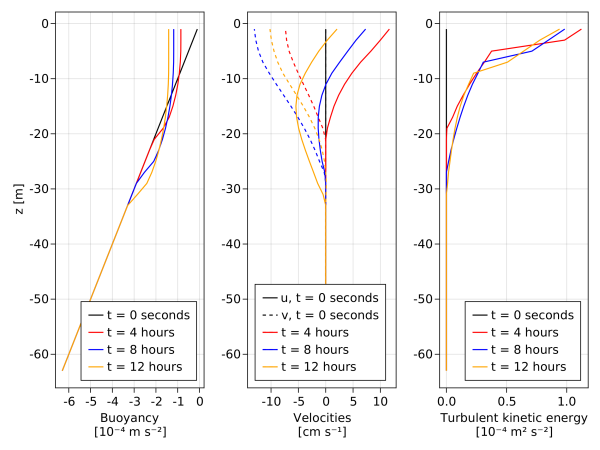
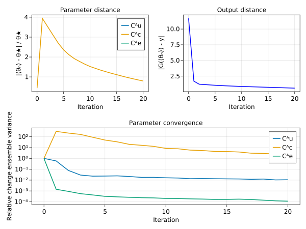
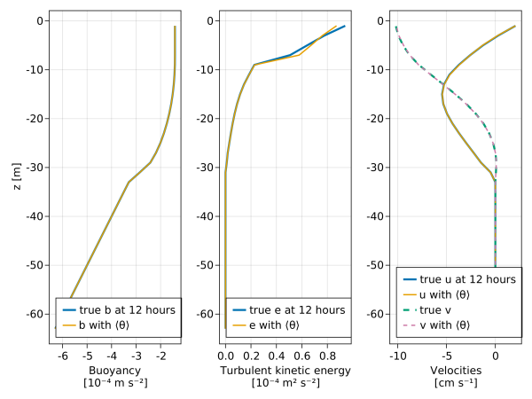
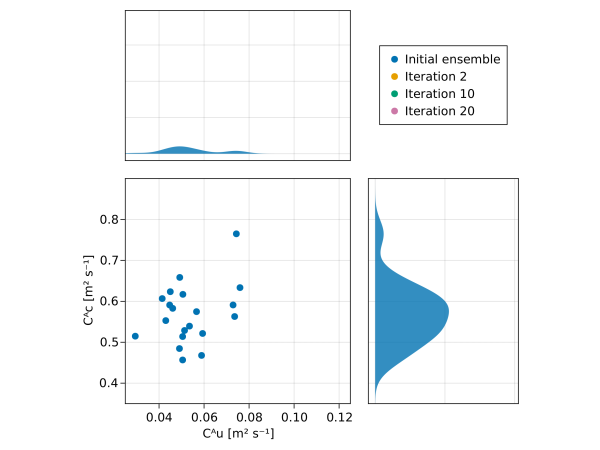

Perfect CAKTE calibration with Ensemble Kalman Inversion
Install dependencies
using Pkg
pkg"add OceanTurbulenceParameterEstimation, Oceananigans, Distributions, CairoMakie"using OceanTurbulenceParameterEstimation, LinearAlgebra, CairoMakie
using Oceananigans.TurbulenceClosures.CATKEVerticalDiffusivities: CATKEVerticalDiffusivity, MixingLength, SurfaceTKEFluxPerfect observations of CATKE-driven mixing
Our first task is to generate synthetic observations, using a one-dimensional model driven by surface fluxes and with turbulent mixing parameterized by CATKE. We use a simplified CATKE with no stability function (by setting Cᴷuʳ = Cᴷcʳ = Cᴷeʳ = 0) and "reasonable", but unrealistic parameters. We will only attempt to calibrate a subset of the parameters that we set to generate the observations.
# Load utilities
examples_path = joinpath(pathof(OceanTurbulenceParameterEstimation), "..", "..", "examples")
include(joinpath(examples_path, "intro_to_inverse_problems.jl"))
mixing_length = MixingLength(Cᴬu = 0.0,
Cᴬc = 1.0,
Cᴬe = 0.0,
Cᴷu⁻ = 0.1,
Cᴷc⁻ = 0.1,
Cᴷe⁻ = 0.1,
Cᴷuʳ = 0.0,
Cᴷcʳ = 0.0,
Cᴷeʳ = 0.0)
catke = CATKEVerticalDiffusivity(mixing_length=mixing_length)
# Specify both wind mixing and convection:
data_path = generate_synthetic_observations("catke",
closure = catke,
tracers = (:b, :e),
Nz = 32,
Lz = 64,
Δt = 10.0,
stop_time = 12hours,
overwrite = true,
Qᵘ = -1e-4,
Qᵇ = 1e-8,
N² = 1e-5)"catke.jld2"Next, we load and inspect the observations to make sure they're sensible:
observations = SyntheticObservations(data_path, field_names=(:u, :v, :b, :e), transformation=ZScore())
fig = Figure()
ax_b = Axis(fig[1, 1], xlabel = "Buoyancy\n[10⁻⁴ m s⁻²]", ylabel = "z [m]")
ax_u = Axis(fig[1, 2], xlabel = "Velocities\n[cm s⁻¹]")
ax_e = Axis(fig[1, 3], xlabel = "Turbulent kinetic energy\n[10⁻⁴ m² s⁻²]")
z = znodes(Center, observations.grid)
colorcycle = [:black, :red, :blue, :orange, :pink]
for i = 1:length(observations.times)
b = observations.field_time_serieses.b[i]
e = observations.field_time_serieses.e[i]
u = observations.field_time_serieses.u[i]
v = observations.field_time_serieses.v[i]
t = observations.times[i]
label = "t = " * prettytime(t)
u_label = i == 1 ? "u, " * label : label
v_label = i == 1 ? "v, " * label : label
# Note unit conversions below, eg m s⁻² -> 10⁻⁴ m s⁻²
lines!(ax_b, 1e4 * interior(b)[1, 1, :], z; label, color=colorcycle[i])
lines!(ax_u, 1e2 * interior(u)[1, 1, :], z; linestyle=:solid, color=colorcycle[i], label=u_label)
lines!(ax_u, 1e2 * interior(v)[1, 1, :], z; linestyle=:dash, color=colorcycle[i], label=v_label)
lines!(ax_e, 1e4 * interior(e)[1, 1, :], z; label, color=colorcycle[i])
end
axislegend(ax_b, position=:rb)
axislegend(ax_u, position=:lb, merge=true)
axislegend(ax_e, position=:rb)
##display(fig)┌ Warning: Assignment to `b` in soft scope is ambiguous because a global variable by the same name exists: `b` will be treated as a new local. Disambiguate by using `local b` to suppress this warning or `global b` to assign to the existing global variable.
└ @ perfect_catke_calibration.md:76
┌ Warning: Assignment to `t` in soft scope is ambiguous because a global variable by the same name exists: `t` will be treated as a new local. Disambiguate by using `local t` to suppress this warning or `global t` to assign to the existing global variable.
└ @ perfect_catke_calibration.md:80
Well, that looks like a boundary layer, in some respects.
Calibration
Next, we build a simulation of an ensemble of column models to calibrate CATKE using Ensemble Kalman Inversion.
architecture = CPU()
ensemble_simulation, closure★ = build_ensemble_simulation(observations, architecture; Nensemble=20)(Simulation{typename(Oceananigans.Models.HydrostaticFreeSurfaceModels.HydrostaticFreeSurfaceModel){typename(Oceananigans.Architectures.CPU), Float64}}
├── Model clock: time = 0 seconds, iteration = 0
├── Next time step: 10 seconds
├── Elapsed wall time: 0 seconds
├── Stop time: 12 hours
├── Stop iteration : Inf
├── Wall time limit: Inf
├── Callbacks: typename(OrderedCollections.OrderedDict) with 4 entries:
│ ├── stop_time_exceeded => typename(Oceananigans.Simulations.Callback)
│ ├── stop_iteration_exceeded => typename(Oceananigans.Simulations.Callback)
│ ├── wall_time_limit_exceeded => typename(Oceananigans.Simulations.Callback)
│ └── nan_checker => typename(Oceananigans.Simulations.Callback)
├── Output writers: typename(OrderedCollections.OrderedDict) with no entries
└── Diagnostics: typename(OrderedCollections.OrderedDict) with no entries, CATKEVerticalDiffusivity with VerticallyImplicitTimeDiscretization and parameters:
Cᴰ = 2.91,
MixingLength:
Cᴸᵇ = 1.16,
Cᵟu = 0.5,
Cᵟc = 0.5,
Cᵟe = 0.5,
Cᴬu = 0.0,
Cᴬc = 1.0,
Cᴬe = 0.0,
Cᴷu⁻ = 0.1,
Cᴷc⁻ = 0.1,
Cᴷe⁻ = 0.1,
Cᴷuʳ = 0.0,
Cᴷcʳ = 0.0,
Cᴷeʳ = 0.0,
CᴷRiʷ = 0.72,
CᴷRiᶜ = 0.76,
SurfaceTKEFlux:
Cᵂu★ = 3.62,
CᵂwΔ = 1.31)We choose to calibrate a subset of the CATKE parameters,
priors = (Cᴬu = lognormal(mean=0.05, std=0.01),
Cᴬc = lognormal(mean=0.6, std=0.1),
Cᴬe = lognormal(mean=0.2, std=0.04))
free_parameters = FreeParameters(priors)FreeParameters with 3 parameters
├── names: (:Cᴬu, :Cᴬc, :Cᴬe)
└── priors: Dict{Symbol, Any}
├── Cᴬu => LogNormal{Float64}(μ=-3.0153426301306316, σ=0.1980422004353651)
├── Cᴬc => LogNormal{Float64}(μ=-0.5245251108600479, σ=0.16552635496534787)
└── Cᴬe => LogNormal{Float64}(μ=-1.6290482690107408, σ=0.1980422004353651)The handy utility function build_ensemble_simulation also tells us the optimal parameters that were used when generating the synthetic observations:
@show θ★ = (Cᴬu = closure★.mixing_length.Cᴬu,
Cᴬc = closure★.mixing_length.Cᴬc,
Cᴬe = closure★.mixing_length.Cᴬe)(Cᴬu = 0.0, Cᴬc = 1.0, Cᴬe = 0.0)We construct the InverseProblem from observations, ensemble_simulation, and free_parameters,
calibration = InverseProblem(observations, ensemble_simulation, free_parameters)InverseProblem{ConcatenatedOutputMap}
├── observations: SyntheticObservations of (:u, :v, :b, :e) on 1×1×32 RectilinearGrid{Float64, Oceananigans.Grids.Flat, Oceananigans.Grids.Flat, Oceananigans.Grids.Bounded} on Oceananigans.Architectures.CPU with 0×0×1 halo
├── simulation: Simulation on 20×1×32 RectilinearGrid{Float64, Oceananigans.Grids.Flat, Oceananigans.Grids.Flat, Oceananigans.Grids.Bounded} on Oceananigans.Architectures.CPU with 0×0×1 halo with Δt=10.0
├── free_parameters: (:Cᴬu, :Cᴬc, :Cᴬe)
└── output map: ConcatenatedOutputMapWe can check that the first ensemble member of the mapped output, which was run with the "true" parameters, is identical to the mapped observations:
G = forward_map(calibration, θ★)
y = observation_map(calibration)
@show G[:, 1] ≈ ytrueEnsemble Kalman Inversion
Next, we construct an EnsembleKalmanInversion (EKI) object,
The calibration is done here using Ensemble Kalman Inversion. For more information about the algorithm refer to EnsembleKalmanProcesses.jl documentation.
eki = EnsembleKalmanInversion(calibration;
noise_covariance = 1e-2,
resampler = Resampler(acceptable_failure_fraction=0.1))EnsembleKalmanInversion
├── inverse_problem: InverseProblem
├── ensemble_kalman_process: EnsembleKalmanProcesses.EnsembleKalmanProcessModule.EnsembleKalmanProcess{Float64, Int64, EnsembleKalmanProcesses.EnsembleKalmanProcessModule.Inversion}
├── mapped_observations: 384-element Vector{Float64}
├── noise_covariance: 384×384 Matrix{Float64}
├── inverting_forward_map: OceanTurbulenceParameterEstimation.EnsembleKalmanInversions.var"#inverting_forward_map#4"
├── iteration: 0
├── resampler: Resampler{FullEnsembleDistribution}├── unconstrained_parameters: Matrix{Float64}
└── forward_map_output: Matrix{Float64}and perform few iterations to see if we can converge to the true parameter values.
iterate!(eki; iterations = 20)(Cᴬu = 0.010965743597308203, Cᴬc = 1.7939202721991379, Cᴬe = 0.00028119848906812457)Last, we visualize the outputs of EKI calibration.
# Convert everything to a vector
optimal_θ = collect(values(θ★))
ensemble_mean_θ = map(summary -> collect(values(summary.ensemble_mean)), eki.iteration_summaries)
θ_variances = map(summary -> collect(values(summary.ensemble_var)), eki.iteration_summaries)
names = keys(θ★)
absolute_error = NamedTuple(name => map(θ -> θ[p] - θ★[p], ensemble_mean_θ) for (p, name) in enumerate(names))
relative_error = NamedTuple(name => abs.(absolute_error[name]) ./ θ★[name] for name in names)
output_distances = map(θ -> norm(forward_map(calibration, θ)[:, 1:1] - y), ensemble_mean_θ)
fig = Figure()
ax_error = Axis(fig[1, 1], title = "Parameter distance", xlabel = "Iteration", ylabel = "|⟨θₙ⟩ - θ★| / θ★")
for name in names
lines!(ax_error, 0:eki.iteration, parent(relative_error[name]), linewidth=2, label=string(name))
end
axislegend(ax_error, position=:rt)
lines(fig[1, 2], 0:eki.iteration, parent(output_distances), color = :blue, linewidth = 2,
axis = (title = "Output distance", xlabel = "Iteration", ylabel = "|G(⟨θₙ⟩) - y|"))
ax3 = Axis(fig[2, 1:2], title = "Parameter convergence", xlabel = "Iteration",
ylabel = "Relative change ensemble variance", yscale = log10)
for (p, name) in enumerate(free_parameters.names)
θp_variances = [θ_variances[iter][p] for iter = 0:eki.iteration]
lines!(ax3, 0:eki.iteration, parent(θp_variances / θp_variances[1]), label = String(name), linewidth = 2)
end
axislegend(ax3, position = :rt)
##display(fig)[ Info: Initializing simulation...
[ Info: ... simulation initialization complete (285.365 ms)
[ Info: Executing initial time step...
[ Info: ... initial time step complete (2.205 ms).
[ Info: Simulation is stopping. Model time 12 hours has hit or exceeded simulation stop time 12 hours.
[ Info: Initializing simulation...
[ Info: ... simulation initialization complete (651.830 μs)
[ Info: Executing initial time step...
[ Info: ... initial time step complete (2.456 ms).
[ Info: Simulation is stopping. Model time 12 hours has hit or exceeded simulation stop time 12 hours.
[ Info: Initializing simulation...
[ Info: ... simulation initialization complete (610.528 μs)
[ Info: Executing initial time step...
[ Info: ... initial time step complete (2.463 ms).
[ Info: Simulation is stopping. Model time 12 hours has hit or exceeded simulation stop time 12 hours.
[ Info: Initializing simulation...
[ Info: ... simulation initialization complete (638.329 μs)
[ Info: Executing initial time step...
[ Info: ... initial time step complete (2.433 ms).
[ Info: Simulation is stopping. Model time 12 hours has hit or exceeded simulation stop time 12 hours.
[ Info: Initializing simulation...
[ Info: ... simulation initialization complete (602.327 μs)
[ Info: Executing initial time step...
[ Info: ... initial time step complete (2.215 ms).
[ Info: Simulation is stopping. Model time 12 hours has hit or exceeded simulation stop time 12 hours.
[ Info: Initializing simulation...
[ Info: ... simulation initialization complete (633.229 μs)
[ Info: Executing initial time step...
[ Info: ... initial time step complete (2.188 ms).
[ Info: Simulation is stopping. Model time 12 hours has hit or exceeded simulation stop time 12 hours.
[ Info: Initializing simulation...
[ Info: ... simulation initialization complete (605.827 μs)
[ Info: Executing initial time step...
[ Info: ... initial time step complete (2.293 ms).
[ Info: Simulation is stopping. Model time 12 hours has hit or exceeded simulation stop time 12 hours.
[ Info: Initializing simulation...
[ Info: ... simulation initialization complete (593.527 μs)
[ Info: Executing initial time step...
[ Info: ... initial time step complete (2.292 ms).
[ Info: Simulation is stopping. Model time 12 hours has hit or exceeded simulation stop time 12 hours.
[ Info: Initializing simulation...
[ Info: ... simulation initialization complete (599.528 μs)
[ Info: Executing initial time step...
[ Info: ... initial time step complete (2.202 ms).
[ Info: Simulation is stopping. Model time 12 hours has hit or exceeded simulation stop time 12 hours.
[ Info: Initializing simulation...
[ Info: ... simulation initialization complete (609.728 μs)
[ Info: Executing initial time step...
[ Info: ... initial time step complete (2.192 ms).
[ Info: Simulation is stopping. Model time 12 hours has hit or exceeded simulation stop time 12 hours.
[ Info: Initializing simulation...
[ Info: ... simulation initialization complete (624.129 μs)
[ Info: Executing initial time step...
[ Info: ... initial time step complete (2.145 ms).
[ Info: Simulation is stopping. Model time 12 hours has hit or exceeded simulation stop time 12 hours.
[ Info: Initializing simulation...
[ Info: ... simulation initialization complete (603.127 μs)
[ Info: Executing initial time step...
[ Info: ... initial time step complete (2.146 ms).
[ Info: Simulation is stopping. Model time 12 hours has hit or exceeded simulation stop time 12 hours.
[ Info: Initializing simulation...
[ Info: ... simulation initialization complete (582.027 μs)
[ Info: Executing initial time step...
[ Info: ... initial time step complete (2.179 ms).
[ Info: Simulation is stopping. Model time 12 hours has hit or exceeded simulation stop time 12 hours.
[ Info: Initializing simulation...
[ Info: ... simulation initialization complete (437.620 μs)
[ Info: Executing initial time step...
[ Info: ... initial time step complete (1.599 ms).
[ Info: Simulation is stopping. Model time 12 hours has hit or exceeded simulation stop time 12 hours.
[ Info: Initializing simulation...
[ Info: ... simulation initialization complete (602.628 μs)
[ Info: Executing initial time step...
[ Info: ... initial time step complete (2.156 ms).
[ Info: Simulation is stopping. Model time 12 hours has hit or exceeded simulation stop time 12 hours.
[ Info: Initializing simulation...
[ Info: ... simulation initialization complete (616.528 μs)
[ Info: Executing initial time step...
[ Info: ... initial time step complete (2.155 ms).
[ Info: Simulation is stopping. Model time 12 hours has hit or exceeded simulation stop time 12 hours.
[ Info: Initializing simulation...
[ Info: ... simulation initialization complete (650.530 μs)
[ Info: Executing initial time step...
[ Info: ... initial time step complete (2.221 ms).
[ Info: Simulation is stopping. Model time 12 hours has hit or exceeded simulation stop time 12 hours.
[ Info: Initializing simulation...
[ Info: ... simulation initialization complete (602.727 μs)
[ Info: Executing initial time step...
[ Info: ... initial time step complete (2.202 ms).
[ Info: Simulation is stopping. Model time 12 hours has hit or exceeded simulation stop time 12 hours.
[ Info: Initializing simulation...
[ Info: ... simulation initialization complete (594.627 μs)
[ Info: Executing initial time step...
[ Info: ... initial time step complete (2.206 ms).
[ Info: Simulation is stopping. Model time 12 hours has hit or exceeded simulation stop time 12 hours.
[ Info: Initializing simulation...
[ Info: ... simulation initialization complete (597.628 μs)
[ Info: Executing initial time step...
[ Info: ... initial time step complete (2.112 ms).
[ Info: Simulation is stopping. Model time 12 hours has hit or exceeded simulation stop time 12 hours.
[ Info: Initializing simulation...
[ Info: ... simulation initialization complete (595.027 μs)
[ Info: Executing initial time step...
[ Info: ... initial time step complete (2.167 ms).
[ Info: Simulation is stopping. Model time 12 hours has hit or exceeded simulation stop time 12 hours.
final_mean_θ = eki.iteration_summaries[end].ensemble_mean
forward_run!(calibration, [θ★, final_mean_θ])
time_series_collector = calibration.time_series_collector
times = time_series_collector.times
# Extract last save point and plot each solution component
Nt = length(times)
b = time_series_collector.field_time_serieses.b[Nt]
e = time_series_collector.field_time_serieses.e[Nt]
u = time_series_collector.field_time_serieses.u[Nt]
v = time_series_collector.field_time_serieses.v[Nt]
t = times[Nt]
z = znodes(b)
# The ensemble varies along the first, or `x`-dimension:
b★ = 1e4 * interior(b)[1, 1, :] # convert units m s⁻² -> 10⁻⁴ m s⁻²
b¹ = 1e4 * interior(b)[2, 1, :] # convert units m s⁻² -> 10⁻⁴ m s⁻²
e★ = 1e4 * interior(e)[1, 1, :] # convert units m² s⁻² -> 10⁻⁴ m² s⁻²
e¹ = 1e4 * interior(e)[2, 1, :] # convert units m² s⁻² -> 10⁻⁴ m² s⁻²
u★ = 1e2 * interior(u)[1, 1, :] # convert units m s⁻¹ -> cm s⁻¹
u¹ = 1e2 * interior(u)[2, 1, :] # convert units m s⁻¹ -> cm s⁻¹
v★ = 1e2 * interior(v)[1, 1, :] # convert units m s⁻¹ -> cm s⁻¹
v¹ = 1e2 * interior(v)[2, 1, :] # convert units m s⁻¹ -> cm s⁻¹
fig = Figure()
ax = Axis(fig[1, 1], xlabel = "Buoyancy\n[10⁻⁴ m s⁻²]", ylabel = "z [m]")
b★_label = "true b at " * prettytime(t)
b¹_label = "b with ⟨θ⟩"
lines!(ax, b★, z; label=b★_label, linewidth=3)
lines!(ax, b¹, z; label=b¹_label, linewidth=2)
axislegend(ax, position=:lb)
ax = Axis(fig[1, 2], xlabel = "Turbulent kinetic energy\n[10⁻⁴ m² s⁻²]")
e★_label = "true e at " * prettytime(t)
e¹_label = "e with ⟨θ⟩"
lines!(ax, e★, z; label=e★_label, linewidth=3)
lines!(ax, e¹, z; label=e¹_label, linewidth=2)
axislegend(ax, position=:lb)
ax = Axis(fig[1, 3], xlabel = "Velocities\n[cm s⁻¹]")
u★_label = "true u at " * prettytime(t)
u¹_label = "u with ⟨θ⟩"
v★_label = "true v"
v¹_label = "v with ⟨θ⟩"
lines!(ax, u★, z; label=u★_label, linewidth=3)
lines!(ax, u¹, z; label=u¹_label, linewidth=2)
lines!(ax, v★, z; label=v★_label, linestyle=:dash, linewidth=3)
lines!(ax, v¹, z; label=v¹_label, linestyle=:dash, linewidth=2)
axislegend(ax, position=:lb)[ Info: Initializing simulation...
[ Info: ... simulation initialization complete (700.932 μs)
[ Info: Executing initial time step...
[ Info: ... initial time step complete (2.567 ms).
[ Info: Simulation is stopping. Model time 12 hours has hit or exceeded simulation stop time 12 hours.
##display(fig)And also we plot the the distributions of the various model ensembles for few EKI iterations to see if and how well they converge to the true diffusivity values.
fig = Figure()
ax1 = Axis(fig[1, 1])
ax2 = Axis(fig[2, 1], xlabel = "Cᴬu [m² s⁻¹]", ylabel = "Cᴬc [m² s⁻¹]")
ax3 = Axis(fig[2, 2])
scatters = []
labels = String[]
for iteration in [0, 2, 10, 20]
# Make parameter matrix
parameters = eki.iteration_summaries[iteration].parameters
Nensemble = length(parameters)
parameter_ensemble_matrix = [parameters[i][j] for i=1:Nensemble, j=1:2]
label = iteration == 0 ? "Initial ensemble" : "Iteration $iteration"
push!(labels, label)
push!(scatters, scatter!(ax2, parameter_ensemble_matrix))
density!(ax1, parameter_ensemble_matrix[:, 1])
density!(ax3, parameter_ensemble_matrix[:, 2], direction = :y)
end
vlines!(ax1, [θ★.Cᴬu], color = :red)
vlines!(ax2, [θ★.Cᴬu], color = :red)
hlines!(ax2, [θ★.Cᴬc], color = :red)
hlines!(ax3, [θ★.Cᴬc], color = :red)
colsize!(fig.layout, 1, Fixed(300))
colsize!(fig.layout, 2, Fixed(200))
rowsize!(fig.layout, 1, Fixed(200))
rowsize!(fig.layout, 2, Fixed(300))
Legend(fig[1, 2], scatters, labels, position = :lb)
hidedecorations!(ax1, grid = false)
hidedecorations!(ax3, grid = false)
xlims!(ax1, 0.025, 0.125)
xlims!(ax2, 0.025, 0.125)
ylims!(ax2, 0.35, 0.9)
ylims!(ax3, 0.35, 0.9)
##display(fig)
Hint: if using a REPL or notebook, try using Pkg; Pkg.add("ElectronDisplay"); using ElectronDisplay; display(fig) To see the figure in a window.
This page was generated using Literate.jl.